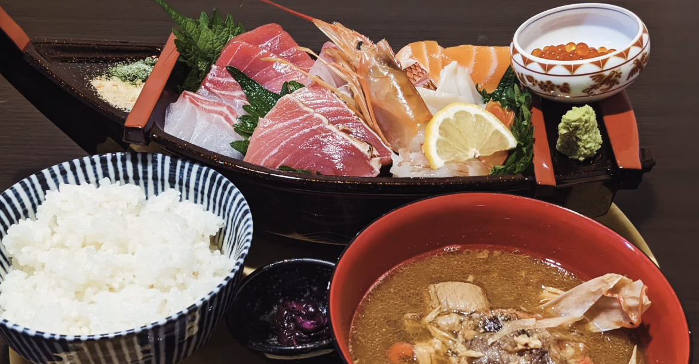
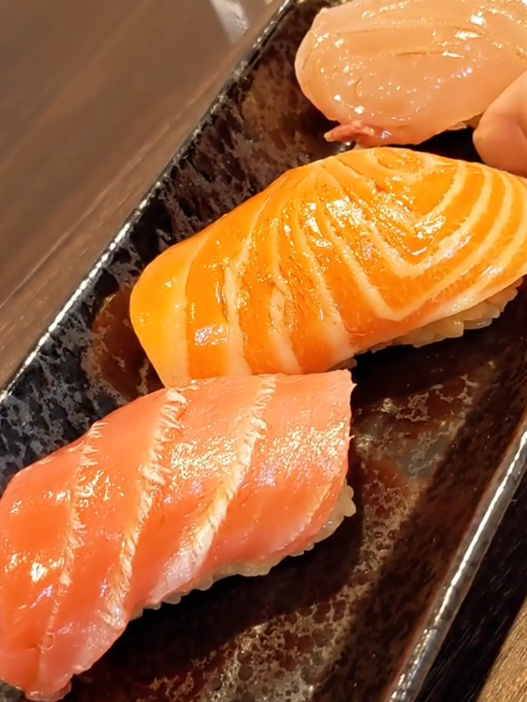
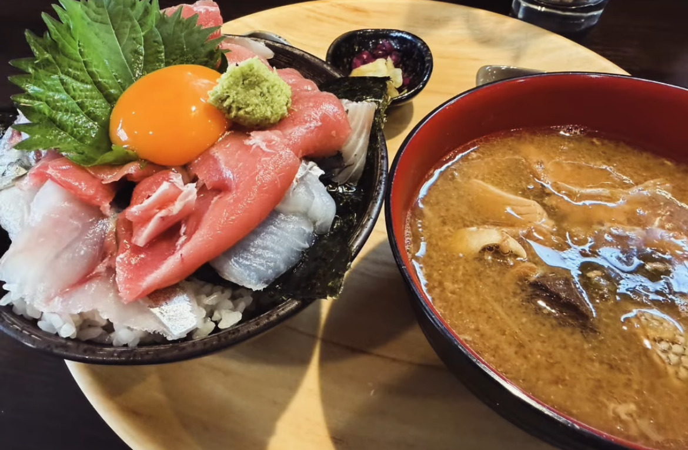

独自にブレンドした赤酢の酢飯に、厚く引いた地魚を。堺駅南口の路地で、その日の海をそのままお出しします。
定番の酢飯ではなく、独自にブレンドした赤酢を。ほどよい酸味と甘みが、鮮魚の脂と旨みを静かに持ち上げます。
ネタは惜しみなく厚切りに、あるいはネタに合わせて。決まった型にはめない「独学の寿司」をお出ししています。日本酒も各種取り揃えました。



※ 仕入れ状況により内容が異なる場合がございます。ご予約はInstagramのDM、またはお電話にて承ります。